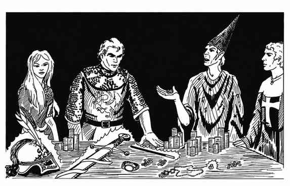

附录 V：宝藏分配建议约定 · Appendix V: Suggested Agreements for Division of Treasure

分配方式 · Agreements
1. 均分：将宝藏按参与角色总数平均分配，简单直接。 2. 按等级分配：将所有角色等级相加，再以总等级为份数分配宝藏；每个经验等级对应一份。 3. 均分并奖励：将宝藏按所有角色人数加二或三作为总份数进行分配。经投票选出的杰出角色或领导者，各额外获得一份。
多职业角色的等级计算方式：将较低职业等级的一半加到较高职业等级上，以确定分宝藏时的总经验等级。双职业角色按其获准使用的职业等级取得份额（见“双职业角色”）。
调整项 · Modifiers
1. 玩家角色的随从按半个角色或其等级的一半计算，且不能取得奖励份额。 2. 失去行动能力或死亡（之后又复活）的角色，只能分得其失能或死亡前获得的宝藏。 3. 不合作、妨碍队伍、攻击队友，或直接导致队友失能或死亡的角色，可被罚没四分之一至全部份额。
魔法宝藏 · Magical Treasure
金币与可出售的贵重物品容易估价，魔法物品的分配则困难得多，因此队伍需要商定分配规则。魔法物品数量要到冒险结束后才会确定，故通常届时再选择具体分配方式。
1. 若只获得一两件魔法物品，可将其单独分配，或配对成与一份宝藏价值相当的份额。若其中一件价值较低，也可与金币合并，凑成一份。 2. 若获得三件或更多魔法物品，可采用以下方式：
3. 三件或更多魔法物品也可采用另一种方式：
- 最好的物品；
- 次好的物品；
- 第三与第四件物品；
- 未分到魔法物品者获得相应金币补偿。
- 最好的物品；
- 第二件物品加一笔金币；
- 第四件物品加“三倍”金币。
按上述方式分组的魔法物品随后掷骰决定选择顺序：点数最高者先选，其次为第二高者，依此类推。建议每名角色按其经验等级获得相同数量的骰次，并保留其中最高点数。非玩家角色随从通常只掷一次。
当然，也可以采用上述方式的变体。无论选择何种制度，只要可行，都应在冒险开始前确定。